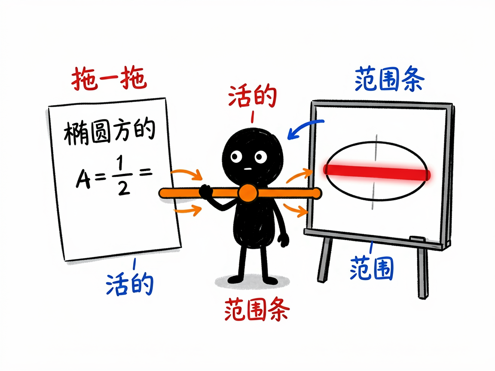
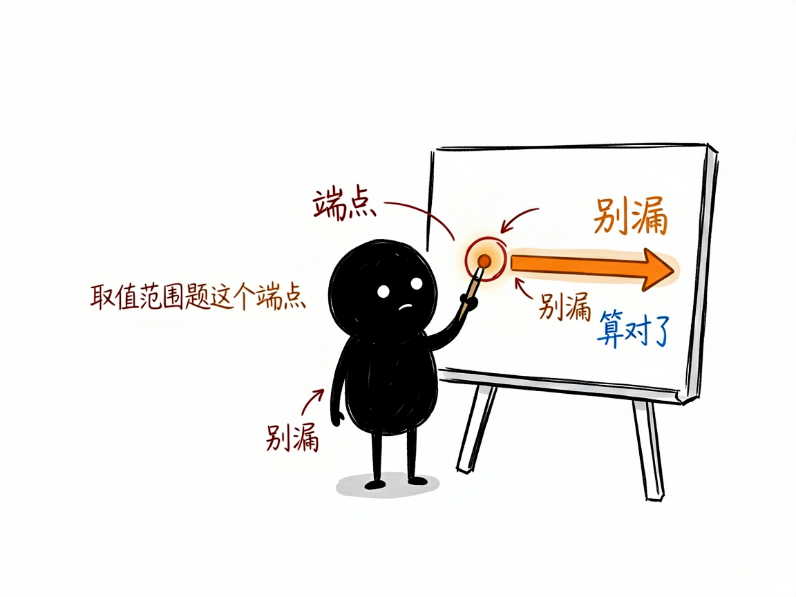

一道解析几何题，怎么变成能动手拖的网页 —— edu-analytic-geometry 介绍
做解析几何题的时候，你是不是经常遇到这种情况：参考答案写了一大串推导，可椭圆、双曲线、抛物线到底怎么动起来的，光看纸面上的数字根本想象不出来。尤其是那种"求取值范围""证明定值"的题，结论明明是活的，却被印成了死的。
edu-analytic-geometry 就是来解决这件事的：你给它一道解析几何题（文字、图片、或者让它随机出一道都行），它帮你在 AI 里产出一个能用浏览器直接打开的网页——左边是题面和一根能拖的滑块，中间是分步推导，右边是一块会跟着滑块实时变化的几何画板。拖一拖，题目里的"范围"和"定值"就活过来了。

它到底能做什么
- 把椭圆、双曲线、抛物线、圆相关的题做成单页交互网页，三栏布局一目了然（题面 + 推导 + 画板）。
- 用一根滑块驱动实时重算：拖一下，交点坐标、弦长、向量数量积、三角形面积这些几何量立刻更新，不用你手算。
- 做"取值范围题"和"定值题"特别拿手——画板上会直接标出"理论范围条"或"定值指示"，很多教辅写错的端点开闭它也能算对。
- 右侧画板画出圆锥曲线和动点、动直线、向量，还能用画笔随手圈画重点。
- 背后用精确的符号计算算答案，保证网页上显示的数字、曲线和推导过程完全一致，不会自相矛盾。
- 支持三种入口：直接给它文字题、拍张题图让它识别、或者让它随机抽一道圆锥曲线题给你练手。

怎么用
你不需要记任何命令。在 codex / workbuddy 等 agent 装好 edu-analytic-geometry 技能后，直接对 AI 说话就行：
场景 1：求数量积的取值范围 你：帮我把这道解析几何题做成能拖滑块看范围的交互网页：已知椭圆 x²/4 + y²/3 = 1，过右焦点作直线交椭圆于 A、B 两点，求向量 MA·MB 的取值范围。 AI：AI 先精确算出答案（比如闭区间 [-3, 7/4]，很多教辅会少算一个端点），再生成一个网页；你拖动角度滑块，画板上的直线和交点实时移动，左下角的"范围条"会跟着标出端点，被漏掉的端点也看得见。
场景 2：随机练手 你：给我随机出一道圆锥曲线题，做成能拖着玩的网页。 AI：AI 抽一道题，生成带滑块的交互网页，你拖一拖就能直观体会曲线怎么动、范围怎么变。
场景 3：拍照识别 你：我拍了道解析几何题的照片，帮我做成能拖的网页。 AI：AI 识别题图，生成对应的交互网页，把题里的"定值""范围"用画板演活。
谁适合用
- 高中数学老师在备圆锥曲线专题时，做能当堂演示的课件。
- 学生自己刷题想"看懂为什么"，而不是只背结论。
- 家长想帮孩子把抽象的解析几何讲明白。
- 写教辅、做数学科普内容的人，需要高质量的动态配图。
一点说明
这是个给 AI 用的技能（skill），不是普通人直接打开的 App。平时你不用自己折腾环境，只要把题交给装好它的 AI，它就会帮你产出那个网页文件。底层用到的符号计算由 AI 在背后完成，你不必自己安装。它专注"解析几何"（带坐标轴、有圆锥曲线），纯平面几何的三角形、四边形证明请看下一个技能 edu-plane-geometry。